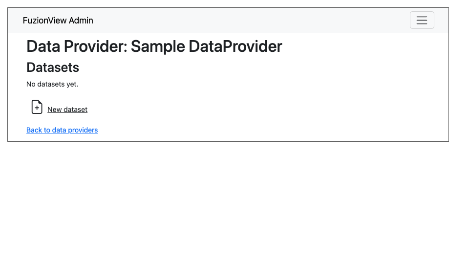
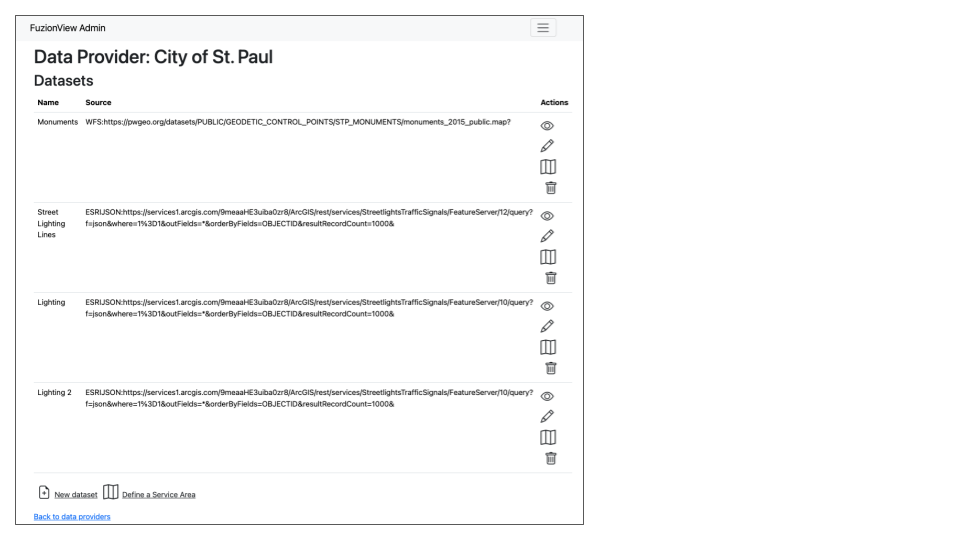
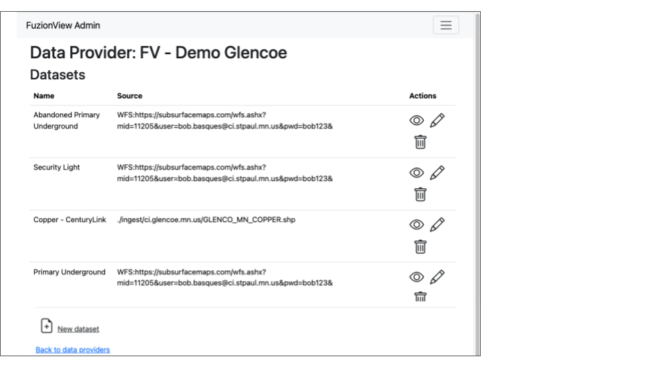
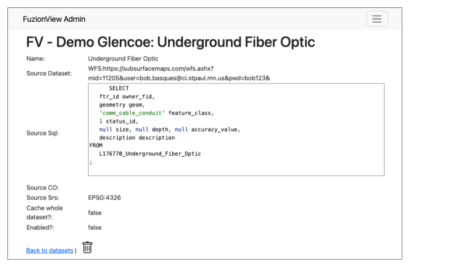
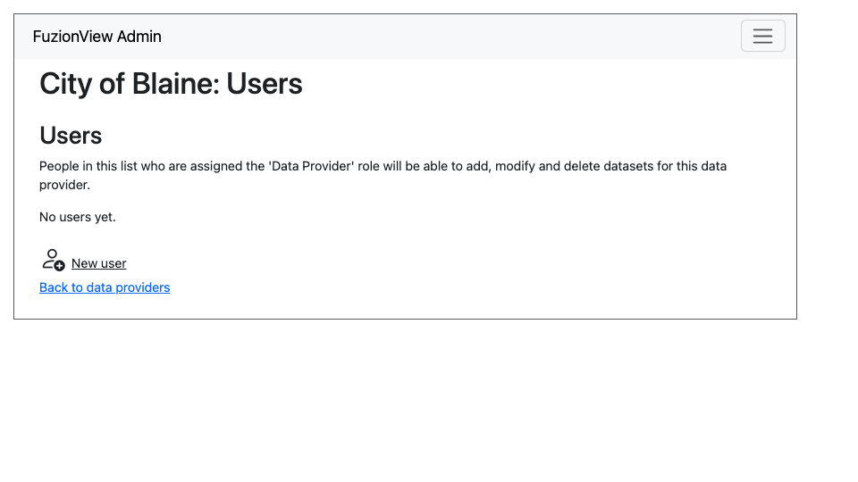
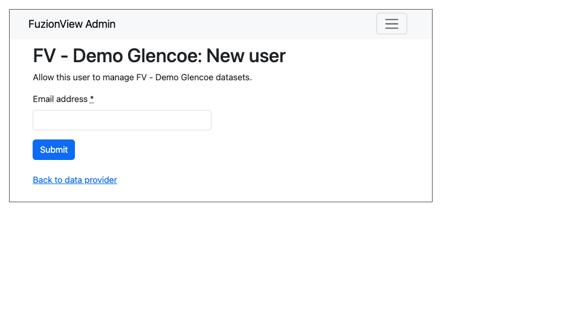
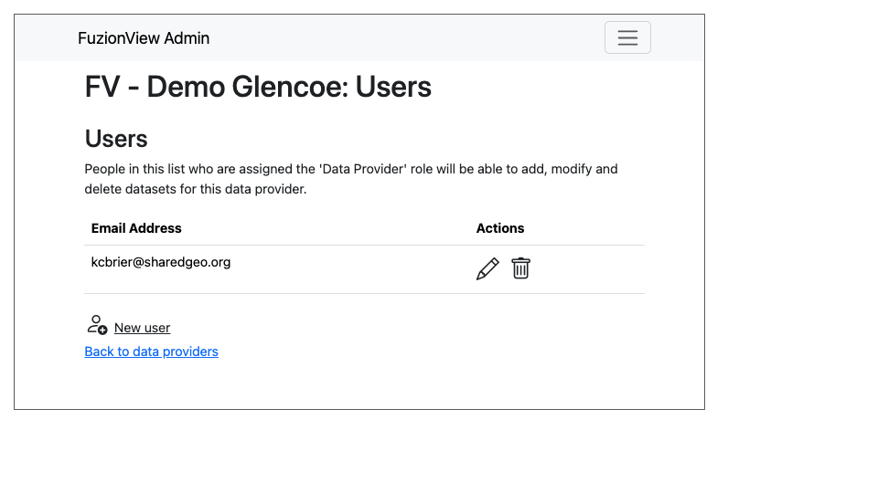
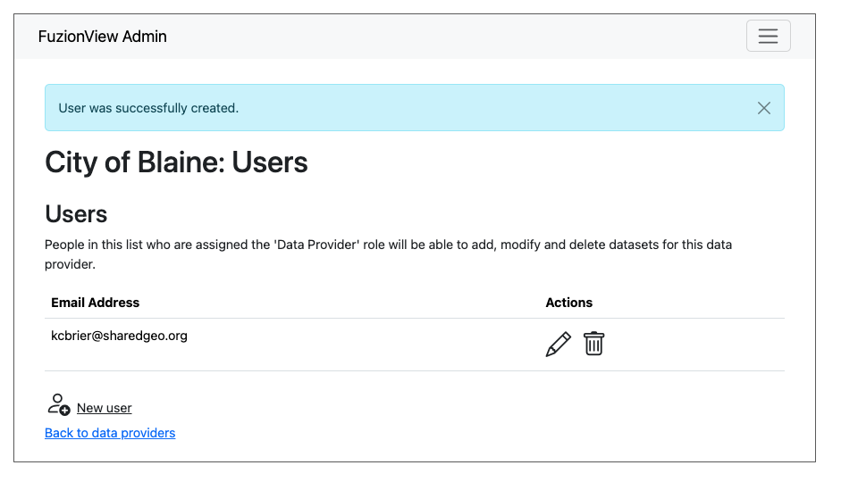

Data Provider Admin
Note
This document will be updated with content from the System Operator Admin Guide once the project is completed. The current content is just a placeholder.
The Data Provider Admin is the Account management interface for Facility Operators and other Data Providers. From this menu you can create and manage all datasets and users.
Datasets
Use the Admin interface to view all the datasets that have been configured for your facility.
Add Dataset After the system operator initiates your Data Provider profile, you can open Datasets from the Data Provider Admin in the menu to configure your datasets.

Add New Dataset
To add the first dataset, select New Dataset from the menu and enter the information needed to connect to the dataset and click Submit to add it.

Add New Dataset
Manage Datasets Select the icon next to the dataset you want to View, Edit, or Delete.

View, Edit, or Delete Dataset

View, Edit, or Delete Dataset
Users
Use the Admin interface to manage users that can securely access your facility datasets. Select New User to add a user.

User Management
Enter the email address of the new user and click Submit.

Create User
You will see the confirmation that the user has been created.

User Created
To manage existing users, select the icon next to the user you want to Edit or Delete.

Edit or Delete User